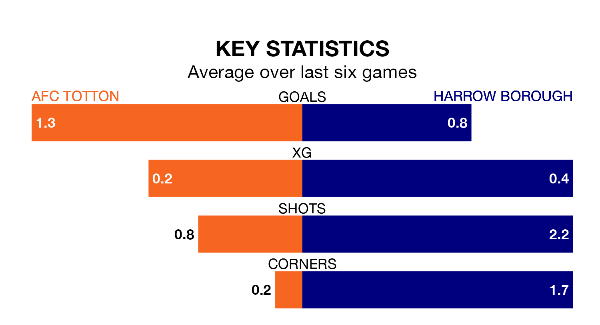

AFC Totton are heavy favourites to keep all three points at home in Saturday's kick-off against Harrow Borough.
Totton, who sit sixth in Southern League Premier South with 23 games played, are priced at 1.3 to seal victory at the Testwood Stadium.
Sitting 16 places and 26 points behind them in the table, Harrow are 8.0 to win with *Betting Company*, while the draw is at 4.8.
With 30 goals in 25 games so far this season, Harrow are the league's second-lowest scorers with 1.2 goals per game. And they are conceding more than average, letting in 62 goals at a rate of 2.5 per game.
Totton, meanwhile, are above average scorers, with 2.1 goals per game, compared to a league average of 1.7. They have conceded 1.3 goals per game.
The home side are in mixed form in Southern League Premier South, with two wins and three draws from their last six games.
With a win and five losses over that period, Borough's form is much worse – they have taken three points from 18, compared to Totton's nine.
Totton's last match was on January 13, a 1-0 win against Salisbury.
Harrow lost 2-0 against Dorchester Town last time out, also on January 13.
Updated: 10:02 (UTC), 19/01/24